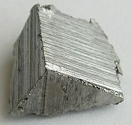

Erbium
|  | |||||||||||||||||||||||||||||||||||||||||||||||||||||||||||||||||||||||||||||||||||||||||||||||||||||||||||||||||||||||||||||||||||||||||||||||||||||||||||||||||||||||||||||||||||||||||||||||||||||||||||||||||||||||||||||||||||||
| General properties | |||||||||||||||||||||||||||||||||||||||||||||||||||||||||||||||||||||||||||||||||||||||||||||||||||||||||||||||||||||||||||||||||||||||||||||||||||||||||||||||||||||||||||||||||||||||||||||||||||||||||||||||||||||||||||||||||||||
|---|---|---|---|---|---|---|---|---|---|---|---|---|---|---|---|---|---|---|---|---|---|---|---|---|---|---|---|---|---|---|---|---|---|---|---|---|---|---|---|---|---|---|---|---|---|---|---|---|---|---|---|---|---|---|---|---|---|---|---|---|---|---|---|---|---|---|---|---|---|---|---|---|---|---|---|---|---|---|---|---|---|---|---|---|---|---|---|---|---|---|---|---|---|---|---|---|---|---|---|---|---|---|---|---|---|---|---|---|---|---|---|---|---|---|---|---|---|---|---|---|---|---|---|---|---|---|---|---|---|---|---|---|---|---|---|---|---|---|---|---|---|---|---|---|---|---|---|---|---|---|---|---|---|---|---|---|---|---|---|---|---|---|---|---|---|---|---|---|---|---|---|---|---|---|---|---|---|---|---|---|---|---|---|---|---|---|---|---|---|---|---|---|---|---|---|---|---|---|---|---|---|---|---|---|---|---|---|---|---|---|---|---|---|---|---|---|---|---|---|---|---|---|---|---|---|---|---|---|---|
| Name, symbol | erbium, Er | ||||||||||||||||||||||||||||||||||||||||||||||||||||||||||||||||||||||||||||||||||||||||||||||||||||||||||||||||||||||||||||||||||||||||||||||||||||||||||||||||||||||||||||||||||||||||||||||||||||||||||||||||||||||||||||||||||||
| Pronunciation | /ˈɜrbiəm/ UR-bee-əm |
||||||||||||||||||||||||||||||||||||||||||||||||||||||||||||||||||||||||||||||||||||||||||||||||||||||||||||||||||||||||||||||||||||||||||||||||||||||||||||||||||||||||||||||||||||||||||||||||||||||||||||||||||||||||||||||||||||
| Appearance | silvery white | ||||||||||||||||||||||||||||||||||||||||||||||||||||||||||||||||||||||||||||||||||||||||||||||||||||||||||||||||||||||||||||||||||||||||||||||||||||||||||||||||||||||||||||||||||||||||||||||||||||||||||||||||||||||||||||||||||||
| Erbium in the periodic table | |||||||||||||||||||||||||||||||||||||||||||||||||||||||||||||||||||||||||||||||||||||||||||||||||||||||||||||||||||||||||||||||||||||||||||||||||||||||||||||||||||||||||||||||||||||||||||||||||||||||||||||||||||||||||||||||||||||
|
|||||||||||||||||||||||||||||||||||||||||||||||||||||||||||||||||||||||||||||||||||||||||||||||||||||||||||||||||||||||||||||||||||||||||||||||||||||||||||||||||||||||||||||||||||||||||||||||||||||||||||||||||||||||||||||||||||||
| Atomic number | 68 | ||||||||||||||||||||||||||||||||||||||||||||||||||||||||||||||||||||||||||||||||||||||||||||||||||||||||||||||||||||||||||||||||||||||||||||||||||||||||||||||||||||||||||||||||||||||||||||||||||||||||||||||||||||||||||||||||||||
| Standard atomic weight (±) | 167.259(3)[1] | ||||||||||||||||||||||||||||||||||||||||||||||||||||||||||||||||||||||||||||||||||||||||||||||||||||||||||||||||||||||||||||||||||||||||||||||||||||||||||||||||||||||||||||||||||||||||||||||||||||||||||||||||||||||||||||||||||||
| Element category | lanthanide | ||||||||||||||||||||||||||||||||||||||||||||||||||||||||||||||||||||||||||||||||||||||||||||||||||||||||||||||||||||||||||||||||||||||||||||||||||||||||||||||||||||||||||||||||||||||||||||||||||||||||||||||||||||||||||||||||||||
| Group, block | group n/a, f-block | ||||||||||||||||||||||||||||||||||||||||||||||||||||||||||||||||||||||||||||||||||||||||||||||||||||||||||||||||||||||||||||||||||||||||||||||||||||||||||||||||||||||||||||||||||||||||||||||||||||||||||||||||||||||||||||||||||||
| Period | period 6 | ||||||||||||||||||||||||||||||||||||||||||||||||||||||||||||||||||||||||||||||||||||||||||||||||||||||||||||||||||||||||||||||||||||||||||||||||||||||||||||||||||||||||||||||||||||||||||||||||||||||||||||||||||||||||||||||||||||
| Electron configuration | [Xe] 4f12 6s2 | ||||||||||||||||||||||||||||||||||||||||||||||||||||||||||||||||||||||||||||||||||||||||||||||||||||||||||||||||||||||||||||||||||||||||||||||||||||||||||||||||||||||||||||||||||||||||||||||||||||||||||||||||||||||||||||||||||||
| per shell | 2, 8, 18, 30, 8, 2 | ||||||||||||||||||||||||||||||||||||||||||||||||||||||||||||||||||||||||||||||||||||||||||||||||||||||||||||||||||||||||||||||||||||||||||||||||||||||||||||||||||||||||||||||||||||||||||||||||||||||||||||||||||||||||||||||||||||
| Physical properties | |||||||||||||||||||||||||||||||||||||||||||||||||||||||||||||||||||||||||||||||||||||||||||||||||||||||||||||||||||||||||||||||||||||||||||||||||||||||||||||||||||||||||||||||||||||||||||||||||||||||||||||||||||||||||||||||||||||
| Phase | solid | ||||||||||||||||||||||||||||||||||||||||||||||||||||||||||||||||||||||||||||||||||||||||||||||||||||||||||||||||||||||||||||||||||||||||||||||||||||||||||||||||||||||||||||||||||||||||||||||||||||||||||||||||||||||||||||||||||||
| Melting point | 1802 K (1529 °C, 2784 °F) | ||||||||||||||||||||||||||||||||||||||||||||||||||||||||||||||||||||||||||||||||||||||||||||||||||||||||||||||||||||||||||||||||||||||||||||||||||||||||||||||||||||||||||||||||||||||||||||||||||||||||||||||||||||||||||||||||||||
| Boiling point | 3141 K (2868 °C, 5194 °F) | ||||||||||||||||||||||||||||||||||||||||||||||||||||||||||||||||||||||||||||||||||||||||||||||||||||||||||||||||||||||||||||||||||||||||||||||||||||||||||||||||||||||||||||||||||||||||||||||||||||||||||||||||||||||||||||||||||||
| Density near r.t. | 9.066 g·cm−3 | ||||||||||||||||||||||||||||||||||||||||||||||||||||||||||||||||||||||||||||||||||||||||||||||||||||||||||||||||||||||||||||||||||||||||||||||||||||||||||||||||||||||||||||||||||||||||||||||||||||||||||||||||||||||||||||||||||||
| when liquid, at m.p. | 8.86 g·cm−3 | ||||||||||||||||||||||||||||||||||||||||||||||||||||||||||||||||||||||||||||||||||||||||||||||||||||||||||||||||||||||||||||||||||||||||||||||||||||||||||||||||||||||||||||||||||||||||||||||||||||||||||||||||||||||||||||||||||||
| Heat of fusion | 19.90 kJ·mol−1 | ||||||||||||||||||||||||||||||||||||||||||||||||||||||||||||||||||||||||||||||||||||||||||||||||||||||||||||||||||||||||||||||||||||||||||||||||||||||||||||||||||||||||||||||||||||||||||||||||||||||||||||||||||||||||||||||||||||
| Heat of vaporization | 280 kJ·mol−1 | ||||||||||||||||||||||||||||||||||||||||||||||||||||||||||||||||||||||||||||||||||||||||||||||||||||||||||||||||||||||||||||||||||||||||||||||||||||||||||||||||||||||||||||||||||||||||||||||||||||||||||||||||||||||||||||||||||||
| Molar heat capacity | 28.12 J·mol−1·K−1 | ||||||||||||||||||||||||||||||||||||||||||||||||||||||||||||||||||||||||||||||||||||||||||||||||||||||||||||||||||||||||||||||||||||||||||||||||||||||||||||||||||||||||||||||||||||||||||||||||||||||||||||||||||||||||||||||||||||
vapor pressure
|
|||||||||||||||||||||||||||||||||||||||||||||||||||||||||||||||||||||||||||||||||||||||||||||||||||||||||||||||||||||||||||||||||||||||||||||||||||||||||||||||||||||||||||||||||||||||||||||||||||||||||||||||||||||||||||||||||||||
| Atomic properties | |||||||||||||||||||||||||||||||||||||||||||||||||||||||||||||||||||||||||||||||||||||||||||||||||||||||||||||||||||||||||||||||||||||||||||||||||||||||||||||||||||||||||||||||||||||||||||||||||||||||||||||||||||||||||||||||||||||
| Oxidation states | 3, 2, 1 (a basic oxide) | ||||||||||||||||||||||||||||||||||||||||||||||||||||||||||||||||||||||||||||||||||||||||||||||||||||||||||||||||||||||||||||||||||||||||||||||||||||||||||||||||||||||||||||||||||||||||||||||||||||||||||||||||||||||||||||||||||||
| Electronegativity | Pauling scale: 1.24 | ||||||||||||||||||||||||||||||||||||||||||||||||||||||||||||||||||||||||||||||||||||||||||||||||||||||||||||||||||||||||||||||||||||||||||||||||||||||||||||||||||||||||||||||||||||||||||||||||||||||||||||||||||||||||||||||||||||
| Ionization energies | 1st: 589.3 kJ·mol−1 2nd: 1150 kJ·mol−1 3rd: 2194 kJ·mol−1 |
||||||||||||||||||||||||||||||||||||||||||||||||||||||||||||||||||||||||||||||||||||||||||||||||||||||||||||||||||||||||||||||||||||||||||||||||||||||||||||||||||||||||||||||||||||||||||||||||||||||||||||||||||||||||||||||||||||
| Atomic radius | empirical: 176 pm | ||||||||||||||||||||||||||||||||||||||||||||||||||||||||||||||||||||||||||||||||||||||||||||||||||||||||||||||||||||||||||||||||||||||||||||||||||||||||||||||||||||||||||||||||||||||||||||||||||||||||||||||||||||||||||||||||||||
| Covalent radius | 189±6 pm | ||||||||||||||||||||||||||||||||||||||||||||||||||||||||||||||||||||||||||||||||||||||||||||||||||||||||||||||||||||||||||||||||||||||||||||||||||||||||||||||||||||||||||||||||||||||||||||||||||||||||||||||||||||||||||||||||||||
| Miscellanea | |||||||||||||||||||||||||||||||||||||||||||||||||||||||||||||||||||||||||||||||||||||||||||||||||||||||||||||||||||||||||||||||||||||||||||||||||||||||||||||||||||||||||||||||||||||||||||||||||||||||||||||||||||||||||||||||||||||
| Crystal structure | hexagonal close-packed (hcp)
|
||||||||||||||||||||||||||||||||||||||||||||||||||||||||||||||||||||||||||||||||||||||||||||||||||||||||||||||||||||||||||||||||||||||||||||||||||||||||||||||||||||||||||||||||||||||||||||||||||||||||||||||||||||||||||||||||||||
| Speed of sound thin rod | 2830 m·s−1 (at 20 °C) | ||||||||||||||||||||||||||||||||||||||||||||||||||||||||||||||||||||||||||||||||||||||||||||||||||||||||||||||||||||||||||||||||||||||||||||||||||||||||||||||||||||||||||||||||||||||||||||||||||||||||||||||||||||||||||||||||||||
| Thermal expansion | poly: 12.2 µm·m−1·K−1 (r.t.) | ||||||||||||||||||||||||||||||||||||||||||||||||||||||||||||||||||||||||||||||||||||||||||||||||||||||||||||||||||||||||||||||||||||||||||||||||||||||||||||||||||||||||||||||||||||||||||||||||||||||||||||||||||||||||||||||||||||
| Thermal conductivity | 14.5 W·m−1·K−1 | ||||||||||||||||||||||||||||||||||||||||||||||||||||||||||||||||||||||||||||||||||||||||||||||||||||||||||||||||||||||||||||||||||||||||||||||||||||||||||||||||||||||||||||||||||||||||||||||||||||||||||||||||||||||||||||||||||||
| Electrical resistivity | poly: 0.860 µΩ·m (r.t.) | ||||||||||||||||||||||||||||||||||||||||||||||||||||||||||||||||||||||||||||||||||||||||||||||||||||||||||||||||||||||||||||||||||||||||||||||||||||||||||||||||||||||||||||||||||||||||||||||||||||||||||||||||||||||||||||||||||||
| Magnetic ordering | paramagnetic at 300 K | ||||||||||||||||||||||||||||||||||||||||||||||||||||||||||||||||||||||||||||||||||||||||||||||||||||||||||||||||||||||||||||||||||||||||||||||||||||||||||||||||||||||||||||||||||||||||||||||||||||||||||||||||||||||||||||||||||||
| Young's modulus | 69.9 GPa | ||||||||||||||||||||||||||||||||||||||||||||||||||||||||||||||||||||||||||||||||||||||||||||||||||||||||||||||||||||||||||||||||||||||||||||||||||||||||||||||||||||||||||||||||||||||||||||||||||||||||||||||||||||||||||||||||||||
| Shear modulus | 28.3 GPa | ||||||||||||||||||||||||||||||||||||||||||||||||||||||||||||||||||||||||||||||||||||||||||||||||||||||||||||||||||||||||||||||||||||||||||||||||||||||||||||||||||||||||||||||||||||||||||||||||||||||||||||||||||||||||||||||||||||
| Bulk modulus | 44.4 GPa | ||||||||||||||||||||||||||||||||||||||||||||||||||||||||||||||||||||||||||||||||||||||||||||||||||||||||||||||||||||||||||||||||||||||||||||||||||||||||||||||||||||||||||||||||||||||||||||||||||||||||||||||||||||||||||||||||||||
| Poisson ratio | 0.237 | ||||||||||||||||||||||||||||||||||||||||||||||||||||||||||||||||||||||||||||||||||||||||||||||||||||||||||||||||||||||||||||||||||||||||||||||||||||||||||||||||||||||||||||||||||||||||||||||||||||||||||||||||||||||||||||||||||||
| Vickers hardness | 430–700 MPa | ||||||||||||||||||||||||||||||||||||||||||||||||||||||||||||||||||||||||||||||||||||||||||||||||||||||||||||||||||||||||||||||||||||||||||||||||||||||||||||||||||||||||||||||||||||||||||||||||||||||||||||||||||||||||||||||||||||
| Brinell hardness | 600–1070 MPa | ||||||||||||||||||||||||||||||||||||||||||||||||||||||||||||||||||||||||||||||||||||||||||||||||||||||||||||||||||||||||||||||||||||||||||||||||||||||||||||||||||||||||||||||||||||||||||||||||||||||||||||||||||||||||||||||||||||
| CAS Registry Number | 7440-52-0 | ||||||||||||||||||||||||||||||||||||||||||||||||||||||||||||||||||||||||||||||||||||||||||||||||||||||||||||||||||||||||||||||||||||||||||||||||||||||||||||||||||||||||||||||||||||||||||||||||||||||||||||||||||||||||||||||||||||
| History | |||||||||||||||||||||||||||||||||||||||||||||||||||||||||||||||||||||||||||||||||||||||||||||||||||||||||||||||||||||||||||||||||||||||||||||||||||||||||||||||||||||||||||||||||||||||||||||||||||||||||||||||||||||||||||||||||||||
| Naming | after Ytterby (Sweden), where it was mined | ||||||||||||||||||||||||||||||||||||||||||||||||||||||||||||||||||||||||||||||||||||||||||||||||||||||||||||||||||||||||||||||||||||||||||||||||||||||||||||||||||||||||||||||||||||||||||||||||||||||||||||||||||||||||||||||||||||
| Discovery | Carl Gustaf Mosander (1842) | ||||||||||||||||||||||||||||||||||||||||||||||||||||||||||||||||||||||||||||||||||||||||||||||||||||||||||||||||||||||||||||||||||||||||||||||||||||||||||||||||||||||||||||||||||||||||||||||||||||||||||||||||||||||||||||||||||||
| Most stable isotopes | |||||||||||||||||||||||||||||||||||||||||||||||||||||||||||||||||||||||||||||||||||||||||||||||||||||||||||||||||||||||||||||||||||||||||||||||||||||||||||||||||||||||||||||||||||||||||||||||||||||||||||||||||||||||||||||||||||||
|
|||||||||||||||||||||||||||||||||||||||||||||||||||||||||||||||||||||||||||||||||||||||||||||||||||||||||||||||||||||||||||||||||||||||||||||||||||||||||||||||||||||||||||||||||||||||||||||||||||||||||||||||||||||||||||||||||||||
| Decay modes in parentheses are predicted, but have not yet been observed | |||||||||||||||||||||||||||||||||||||||||||||||||||||||||||||||||||||||||||||||||||||||||||||||||||||||||||||||||||||||||||||||||||||||||||||||||||||||||||||||||||||||||||||||||||||||||||||||||||||||||||||||||||||||||||||||||||||
Erbium is a chemical element in the lanthanide series, with symbol Er and atomic number 68. A silvery-white solid metal when artificially isolated, natural erbium is always found in chemical combination with other elements on Earth. As such, it is a rare earth element which is associated with several other rare elements in the mineral gadolinite from Ytterby in Sweden, where yttrium, ytterbium, and terbium were discovered.
Erbium's principal uses involve its pink-colored Er3+ ions, which have optical fluorescent properties particularly useful in certain laser applications. Erbium-doped glasses or crystals can be used as optical amplification media, where erbium (III) ions are optically pumped at around 980 or 1480 nm and then radiate light at 1530 nm in stimulated emission. This process results in an unusually mechanically simple laser optical amplifier for signals transmitted by fiber optics. The 1550 nm wavelength is especially important for optical communications because standard single mode optical fibers have minimal loss at this particular wavelength.
In addition to optical fiber amplifier-lasers, a large variety of medical applications (i.e. dermatology, dentistry) utilize the erbium ion's 2940 nm emission (see Er:YAG laser), which is highly absorbed in water in tissues, making its effect very superficial. Such shallow tissue deposition of laser energy is helpful in laser surgery, and for the efficient production of steam which produces enamel ablation by common types of dental laser.
Contents
[hide]Characteristics[edit]
Physical properties[edit]
A trivalent element, pure erbium metal is malleable (or easily shaped), soft yet stable in air, and does not oxidize as quickly as some other rare-earth metals. Its salts are rose-colored, and the element has characteristic sharp absorption spectra bands in visible light, ultraviolet, and near infrared. Otherwise it looks much like the other rare earths. Its sesquioxide is called erbia. Erbium's properties are to a degree dictated by the kind and amount of impurities present. Erbium does not play any known biological role, but is thought to be able to stimulate metabolism.[2]
Erbium is ferromagnetic below 19 K, antiferromagnetic between 19 and 80 K and paramagnetic above 80 K.[3]
Erbium can form propeller-shaped atomic clusters Er3N, where the distance between the erbium atoms is 0.35 nm. Those clusters can be isolated by encapsulating them into fullerene molecules, as confirmed by transmission electron microscopy.[4]
Chemical properties[edit]
Erbium metal tarnishes slowly in air and burns readily to form erbium(III) oxide:
- 4 Er + 3 O2 → 2 Er2O3
Erbium is quite electropositive and reacts slowly with cold water and quite quickly with hot water to form erbium hydroxide:
- 2 Er (s) + 6 H2O (l) → 2 Er(OH)3 (aq) + 3 H2 (g)
Erbium metal reacts with all the halogens:
- 2 Er (s) + 3 F2 (g) → 2 ErF3 (s) [pink]
- 2 Er (s) + 3 Cl2 (g) → 2 ErCl3 (s) [violet]
- 2 Er (s) + 3 Br2 (g) → 2 ErBr3 (s) [violet]
- 2 Er (s) + 3 I2 (g) → 2 ErI3 (s) [violet]
Erbium dissolves readily in dilute sulfuric acid to form solutions containing hydrated Er(III) ions, which exist as rose red [Er(OH2)9]3+ hydration complexes:[5]
- 2 Er (s) + 3 H2SO4 (aq) → 2 Er3+ (aq) + 3 SO2−
4 (aq) + 3 H2 (g)
Isotopes[edit]
Naturally occurring erbium is composed of 6 stable isotopes, 162Er, 164Er, 166Er, 167Er, 168Er, and 170Er with 166Er being the most abundant (33.503% natural abundance). 29 radioisotopes have been characterized, with the most stable being 169Er with a half-life of 9.4 d, 172Er with a half-life of 49.3 h, 160Er with a half-life of 28.58 h, 165Er with a half-life of 10.36 h, and 171Er with a half-life of 7.516 h. All of the remaining radioactive isotopes have half-lives that are less than 3.5 h, and the majority of these have half-lives that are less than 4 minutes. This element also has 13 meta states, with the most stable being 167mEr with a half-life of 2.269 s.[6]
The isotopes of erbium range in atomic weight from 142.9663 u (143Er) to 176.9541 u (177Er). The primary decay mode before the most abundant stable isotope, 166Er, is electron capture, and the primary mode after is beta decay. The primary decay products before 166Er are element 67 (holmium) isotopes, and the primary products after are element 69 (thulium) isotopes.[6]
History[edit]
Erbium (for Ytterby, a village in Sweden) was discovered by Carl Gustaf Mosander in 1843.[7] Mosander separated "yttria" from the mineral gadolinite into three fractions which he called yttria, erbia, and terbia. He named the new element after the village of Ytterby where large concentrations of yttria and erbium are located. Erbia and terbia, however, were confused at this time. After 1860, terbia was renamed erbia and after 1877 what had been known as erbia was renamed terbia. Fairly pure Er2O3 was independently isolated in 1905 by Georges Urbain and Charles James. Reasonably pure metal wasn't produced until 1934 when Klemm and Bommer reduced the anhydrous chloride with potassium vapor. It was only in the 1990s that the price for Chinese-derived erbium oxide became low enough for erbium to be considered for use as a colorant in art glass.[8]
Occurrence[edit]

{kind=link}
{kind=link}
The concentration of erbium in the Earth crust is about 2.8 mg/kg and in the sea water 0.9 ng/L.[9] This concentration is enough to make erbium about 45th in elemental abundance in the Earth's crust.
Like other rare earths, this element is never found as a free element in nature but is found bound in monazite sand ores. It has historically been very difficult and expensive to separate rare earths from each other in their ores but ion-exchange chromatography methods [10] developed in the late 20th century have greatly brought down the cost of production of all rare-earth metals and their chemical compounds.
The principal commercial sources of erbium are from the minerals xenotime and euxenite, and most recently, the ion adsorption clays of southern China; in consequence, China has now become the principal global supplier of this element. In the high-yttrium versions of these ore concentrates, yttrium is about two-thirds of the total by weight, and erbia is about 4–5%. When the concentrate is dissolved in acid, the erbia liberates enough erbium ion to impart a distinct and characteristic pink color to the solution. This color behavior is similar to what Mosander and the other early workers in the lanthanides would have seen in their extracts from the gadolinite minerals of Ytterby.
Production[edit]
Crushed minerals are attacked by hydrochloric or sulfuric acid that transforms insoluble rare-earth oxides into soluble chlorides or sulfates. The acidic filtrates are partially neutralized with caustic soda (sodium hydroxide) to pH 3–4. Thorium precipitates out of solution as hydroxide and is removed. After that the solution is treated with ammonium oxalate to convert rare earths into their insoluble oxalates. The oxalates are converted to oxides by annealing. The oxides are dissolved in nitric acid that excludes one of the main components, cerium, whose oxide is insoluble in HNO3. The solution is treated with magnesium nitrate to produce a crystallized mixture of double salts of rare-earth metals. The salts are separated by ion exchange. In this process, rare-earth ions are sorbed onto suitable ion-exchange resin by exchange with hydrogen, ammonium or cupric ions present in the resin. The rare earth ions are then selectively washed out by suitable complexing agent.[9] Erbium metal is obtained from its oxide or salts by heating with calcium at 1450 °C under argon atmosphere.[9]
Applications[edit]
{kind=link}
Erbium's everyday uses are varied. It is commonly used as a photographic filter, and because of its resilience it is useful as a metallurgical additive. Other uses:
- Used in nuclear technology in neutron-absorbing control rods.[2][11]
- When added to vanadium as an alloy, erbium lowers hardness and improves workability.[12]
- Erbium oxide has a pink color, and is sometimes used as a colorant for glass, cubic zirconia and porcelain. The glass is then often used in sunglasses and cheap jewelry.[12]
- Erbium-doped optical silica-glass fibers are the active element in erbium-doped fiber amplifiers (EDFAs), which are widely used in optical communications.[13] The same fibers can be used to create fiber lasers. In order to work efficiently, erbium-doped fiber is usually co-doped with glass modifiers/homogenizers, often aluminum or phosphorus. These dopants help prevent clustering or Er-ions and transfer the energy more efficiently between the Er ions and the signal. Co-doping of optical fiber with Er and Yb is used in high-power Er/Yb fiber lasers. Erbium can also be used in erbium-doped waveguide amplifiers.[2]
- An erbium-nickel alloy Er3Ni has an unusually high specific heat capacity at liquid-helium temperatures and is used in cryocoolers; a mixture of 65% Er3Co and 35% Er0.9Yb0.1Ni by volume improves the specific heat capacity even more.[14][15]
- A large variety of medical applications (i.e. dermatology, dentistry) utilize erbium ion's 2940 nm emission (see Er:YAG laser), which is highly absorbed in water (absorption coefficient about 12000/cm). Such shallow tissue deposition of laser energy is necessary for laser surgery, and the efficient production of steam for laser enamel ablation in dentistry.
Biological role[edit]
Erbium does not have a biological role, but erbium salts can stimulate metabolism. Humans consume 1 milligram of erbium a year on average. The highest concentration of erbium in humans is in the bones, but there is also erbium in the human kidneys and liver.[2]
Toxicity[edit]
Erbium is slightly toxic if ingested, but erbium compounds are not toxic.[2] Metallic erbium in dust form presents a fire and explosion hazard.[16][17][18]
See also[edit]
References[edit]
- Jump up ^ Standard Atomic Weights 2013. Commission on Isotopic Abundances and Atomic Weights
- ^ Jump up to: a b c d e Emsley, John (2001). "Erbium". Nature's Building Blocks: An A-Z Guide to the Elements. Oxford, England, UK: Oxford University Press. pp. 136–139. ISBN 0-19-850340-7.
- Jump up ^ Jackson, M. (2000). "Magnetism of Rare Earth" (PDF). The IRM quarterly 10 (3): 1.
- Jump up ^ Sato, Yuta; Suenaga, Kazu; Okubo, Shingo; Okazaki, Toshiya; Iijima, Sumio (2007). "Structures of D5d-C80 and Ih-Er3N@C80 Fullerenes and Their Rotation Inside Carbon Nanotubes Demonstrated by Aberration-Corrected Electron Microscopy". Nano Letters 7 (12): 3704. Bibcode:2007NanoL...7.3704S. doi:10.1021/nl0720152.
- Jump up ^ "Chemical reactions of Erbium". Webelements. Retrieved 2009-06-06.
- ^ Jump up to: a b Georges, Audi; Bersillon, O.; Blachot, J.; Wapstra, A.H. (2003). "The NUBASE Evaluation of Nuclear and Decay Properties". Nuclear Physics A (Atomic Mass Data Center) 729: 3–128. Bibcode:2003NuPhA.729....3A. doi:10.1016/j.nuclphysa.2003.11.001.
- Jump up ^ Mosander, C. G. (1843). "On the new metals, Lanthanium and Didymium, which are associated with Cerium; and on Erbium and Terbium, new metals associated with Yttria". Philosophical Magazine 23 (152): 241–254. doi:10.1080/14786444308644728. Note: The first part of this article, which does NOT concern erbium, is a translation of: C. G. Mosander (1842) "Något om Cer och Lanthan" [Some (news) about cerium and lanthanum], Förhandlingar vid de Skandinaviske naturforskarnes tredje möte (Stockholm) [Transactions of the Third Scandinavian Scientist Conference (Stockholm)], vol. 3, pp. 387–398.
- Jump up ^ Ihde, Aaron John (1984). The development of modern chemistry. Courier Dover Publications. pp. 378–379. ISBN 0-486-64235-6.
- ^ Jump up to: a b c Patnaik, Pradyot (2003). Handbook of Inorganic Chemical Compounds. McGraw-Hill. pp. 293–295. ISBN 0-07-049439-8. Retrieved 2009-06-06.
- Jump up ^ Early paper on the use of displacement ion-exchange chromatography to separate rare earths: Spedding, F.H.; Powell, J.E. (1954). "A practical separation of yttrium group rare earths from gadolinite by ion-exchange". Chemical Engineering Progress 50: 7–15.
- Jump up ^ Parish, Theodore A.; Khromov, Vyacheslav V.; Carron, Igor, eds. (1999). "Use of UraniumErbium and PlutoniumErbium Fuel in RBMK Reactors". Safety issues associated with Plutonium involvement in the nuclear fuel cycle. CBoston: Kluwer. pp. 121–125. ISBN 978-0-7923-5593-9.
- ^ Jump up to: a b Hammond, C. R. (2000). The Elements, in Handbook of Chemistry and Physics (81st ed.). CRC press. ISBN 0-8493-0481-4.
- Jump up ^ Becker, P.C.; Olsson, N.A.; Simpson, J.R. (1999). Erbium-doped fiber amplifiers fundamentals and technology. San Diego: Academic Press. ISBN 978-0-12-084590-3.
- Jump up ^ Kittel, Peter (ed.). Advances in Cryogenic Engineering 39a.
- Jump up ^ Ackermann, Robert A. (1997). Cryogenic Regenerative Heat Exchangers. Springer. p. 58. ISBN 978-0-306-45449-3.
- Jump up ^ Haley, T. J.; Koste, L; Komesu, N; Efros, M; Upham, H. C. (1966). "Pharmacology and toxicology of dysprosium, holmium, and erbium chlorides". Toxicology and applied pharmacology 8 (1): 37–43. doi:10.1016/0041-008x(66)90098-6. PMID 5921895.
- Jump up ^ Haley, T. J. (1965). "Pharmacology and toxicology of the rare earth elements". Journal of Pharmaceutical Sciences 54 (5): 663–70. doi:10.1002/jps.2600540502. PMID 5321124.
- Jump up ^ Bruce, D. W.; Hietbrink, B. E.; Dubois, K. P. (1963). "The acute mammalian toxicity of rare earth nitrates and oxides". Toxicology and Applied Pharmacology 5 (6): 750. doi:10.1016/0041-008X(63)90067-X.
Further reading[edit]
- Guide to the Elements – Revised Edition, Albert Stwertka (Oxford University Press; 1998), ISBN 0-19-508083-1.
External links[edit]
| Wikimedia Commons has media related to Erbium. |
| Look up erbium in Wiktionary, the free dictionary. |
- WebElements.com – Erbium (also used as a reference)
- It's Elemental – Erbium
| [hide] Periodic table (Large cells) | |||||||||||||||||||||||||||||||||
|---|---|---|---|---|---|---|---|---|---|---|---|---|---|---|---|---|---|---|---|---|---|---|---|---|---|---|---|---|---|---|---|---|---|
| 1 | 2 | 3 | 4 | 5 | 6 | 7 | 8 | 9 | 10 | 11 | 12 | 13 | 14 | 15 | 16 | 17 | 18 | ||||||||||||||||
| 1 | H | He | |||||||||||||||||||||||||||||||
| 2 | Li | Be | B | C | N | O | F | Ne | |||||||||||||||||||||||||
| 3 | Na | Mg | Al | Si | P | S | Cl | Ar | |||||||||||||||||||||||||
| 4 | K | Ca | Sc | Ti | V | Cr | Mn | Fe | Co | Ni | Cu | Zn | Ga | Ge | As | Se | Br | Kr | |||||||||||||||
| 5 | Rb | Sr | Y | Zr | Nb | Mo | Tc | Ru | Rh | Pd | Ag | Cd | In | Sn | Sb | Te | I | Xe | |||||||||||||||
| 6 | Cs | Ba | La | Ce | Pr | Nd | Pm | Sm | Eu | Gd | Tb | Dy | Ho | Er | Tm | Yb | Lu | Hf | Ta | W | Re | Os | Ir | Pt | Au | Hg | Tl | Pb | Bi | Po | At | Rn | |
| 7 | Fr | Ra | Ac | Th | Pa | U | Np | Pu | Am | Cm | Bk | Cf | Es | Fm | Md | No | Lr | Rf | Db | Sg | Bh | Hs | Mt | Ds | Rg | Cn | 113 | Fl | 115 | Lv | 117 | 118 | |
|
|
|||||||||||||||||||||||||||||||||
|
||
|
||